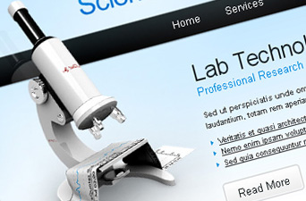

Somos RCC

Grupo de Oração Apocalipse Fazemos parte da Renovação Carismática Católica (RCC), onde nosso objetivo é evangelizar, levar a Palavra da Salvação até as famílias.
Dentro de nosso grupo de oração, temos vários ministérios, como: Ministério de Formação (MF), Ministério de Música e artes (MMA), Ministério de Pregação (MP), Ministério Infantil (MI), entre outros.
Eventos paralelos

Vigília
Todas as sextas nos reunimos para louvar e agradecer a Deus.

Aprofundamento de Dons
Em um final de semana nos reunimos para aprofundarmos mais sobre os dons que Deus nos confia gratuitamente através do seu Santo Espírito.

Seminário de Vida
Seminário de vida no Espírito Santo.
Seminário de vida no Espírito Santo.

EPF
Escola Permanente de Formação.
Escola Permanente de Formação.